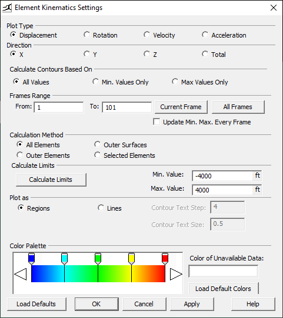
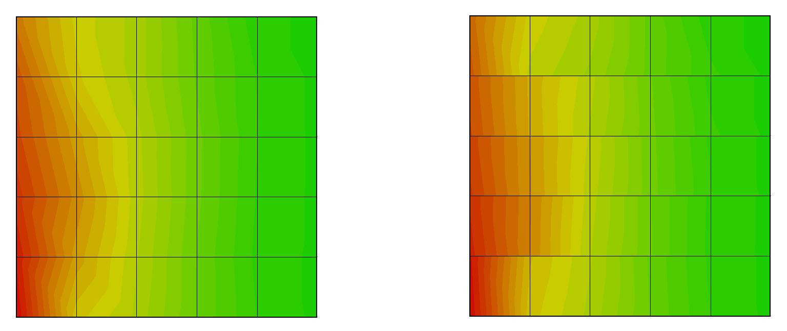

ELS's Viewer's Specialties
Advanced Options
ELS's Viewer is a state-of-the-art graphical user interface that enables you to view structural models with realistic appearance and behavior. It also provides you with powerful tools for analyzing simulation results and presenting them afterwards.
Velocity Vectors
Velocity vectors are indicators of the elements' velocities. They are presented as lines tracing the element's path stretched between the element's centroid's initial position and its current position , as if they are the element's “tail”. The faster the element moves, the longer the vector extends.

To display velocity vectors for all elements in a structure, click or from the Problem Features Menu Select 
To view the vectors for specific components only, use the Elements tab in the Structure browser:
You can change the drawing scale of the vectors, if they appear too short or too long, by using the Drawing Size Settings dialog box or the Velocity Vector toolbar directly.
The Color Settings dialog box can be used to change their drawing color.
Contacts
Since ELS's solver uses the Applied Element Method, springs are generated at the interfaces of touching elements. If during the simulation, elements (that were originally not touching) happen to come in contact with each other or with the boundaries, springs are generated at these points (Refer to ELS's Theoretical Manual for further details).
Note that: The Show Contacts button is disabled by default unless there is one frame at least with existing contacts. If ELS's Viewer is opened while the solver is still running, you may need to click the Update Problem Data option from the Problem Features menu to activate the show contacts button.
Spring State
This option shows the state condition of every spring at every frame. Just like Contacts, to view Spring States in ELS, you’ll have to 1st pay a small visit to *Preferences*. From Tools menu> Choose Preferences > Check Read Spring States. Click the Show State button to activate the Spring State option, then select which state you need to show a Or use the Spring Properties Springs Properties Note that:Checking more than one state will only show the springs satisfying these states together (AND not OR)
Blast
When activated, Blast Surfaces option highlights surfaces that are directly impacted by the blast pressure. Such surfaces are determined by checking whether an element centroid has a line-of-sight with the bomb center or not. If an element is partially exposed to the bomb, but not its centroid, it will not be highlighted as an element directly affected by the blast pressure. You can see the blast wave surfaces (front and side) when you click the drop down menu of the Show Blast- Related Data button or select the corresponding option (Show Blast -Related Data) from the Problem Features menu.

Animation
Animating simulation results is one of ELS's powerful features. It enables you to better visualize the simulation output. ELS’s Solver produces output frames,
each containing detailed information about all elements of the model at specific instances of time or at a specific loading increment.
Viewing these frames one after the other in sequence produces realistic simulations of structural behavior, which you can capture as videos to better present output.

To control the animation, use the Control Bar at the bottom of the viewer’s screen:
| Icon | Description |
|---|---|
| Automatically displays frames in forward sequence. | |
| Automatically display frames in backward sequence. | |
| One Frame forward. | |
| One Frame backward. | |
| Increase or decrease the frame step if the animation is progressing too slow or too fast. | |
| Visually magnify any displacement or deformation. | |
| Displays the cartesian coordinates of the cursor's current location. | |
| Displays the time elapsed in dynamic stages. | |
| Displays the number of the currently displayed frame. You can type a number to jump directly to a specific frame. Hovering over this box shows the total number of frames. | |
| Automatically updates results from the solver. | |
| Opens the Player Settings dialog box which controls which output frames are to be displayed along with the output display speed. | |
| Enables the custom player mode. | |
| Displays the number of selected elements. | |
| Displays the number of selected springs. | |
 |
Displays the number of selected sections. |
| Displays the number of selected contacts. |
Filtration
In ELS's Viewer, you can use filtration to facilitate the selection process of certain springs, elements with certain material, certain layers, certain levels, elements with certain kinematic threshold such as elements with displacements less than or greater than a certain value, … etc.
Charts
ELS enables you to plot animated charts to better understand and present simulation results in addition to elaborating relationships between the different simulation variables.
Charts' Data Types
In ELS, you can choose ,from about thirty possible selections, to plot your data . You can choose any of them to be plotted on the horizontal axis (X-axis) or vertical axis (Y-axis) of a chart.
Chart Data Types
-
1. Increment
Plotting against loading increments is more suitable for static stages. If however, increments are used in dynamic stages, they act as counters for frame numbers, and in static stages, time is considered to be zero.
-
2. Data
Data contains all the advanced plotting variables.
Element
For elements, you can plot any one of the following variables in the X,Y,Z direction or its total magnitude value:
- Displacement
- Rotation
- Force
- Moment
- Velocity
- Acceleration
- Kinetic Energy
Spring
For Springs you can plot:
- Stress
- Strain
- Force
- Relative displacement for normal or resultant shear
- Temperature
- Energy
Straining Actions
You can choose to plot one of the following Straining Actions:
- Normal
- Shear 2
- Shear 3
- Torsion
- Moment 2
- Moment 3
- Section Rotation 2
- Section Rotation 3
- Resultant Shear
- Resultant Moment
Blast Pressure
You can Choose to plot the Blast pressure at any point,by defining its XYZ coordinates in space
OpenFOAM Pressure
You can choose to plot the OpenFOAM Pressure at any point by defining its XYZ coordinates in space.
Location
For elements and springs, profile of data such as force displacement and rotation can be drawn along a certain direction(X,Y,Z).
-
3. Time
Any data type can be plotted against time, which is more suitable for dynamic stages (time is considered zero in static stages).
Charts' Creation
Charts' Basic Options
This section discusses the basic options for editing the appearance of the chart after it has been created.
Each of the following options can be accessed either from the Chart window right-click menu. (Right click any empty part after selecting one of the axes)
This group of options enables you to tailor the view of chart data to your needs:
- To navigate the chart, use the panning and zooming commands in the same way they are used in viewing the structural model.
- To update the chart data while the solver is running, choose the Update Chart Data option from the problem Feature update data setting. You can check the option of add new frames to Chart. Then run the Clip or use update data or Auto update
- To switch the data represented by the X and Y axes, choose the Switch X-Y Axes option from the chart menus.
- To change the scale limits of the chart axes, double-click on the axis to open the Axis Options dialog box. You can change the minimum and maximum values for each axis, by checking the limits option and setting the corresponding values. From this dialog, you can also set other properties of the selected chart axis, such as the axis title text properties.
The following options enable you to modify the look of your chart:
- To show or hide the chart legend, select the corresponding option from the chart menus.
- To change the chart color or background color, show/hide grid lines and legend, and change the chart colors, do so from the Chart Options dialog box
This group of options enables you to modify the representation of a single chart series, view its data, or add more series to already created charts.
To change the properties of a data series, select it from the chart or the chart legend, then choose Series Options from the right-click menu.
The Series Options dialog box is displayed as shown in the Figure. You can change the line style, thickness, and color from the Series Options tab.
NB: Hovering the mouse pointer near a marker displays its exact coordinates in a tooltip.
Charts' Advanced Options
If you are plotting data against time, you can further study its different frequency components. To do so, select the Frequency Domain option from the chart menus. This will change the axes to Amplitude versus Frequency using an FFT algorithm (for more information, refer to the ELS Technical Manual).
NB If you switch to frequency domain, you can switch back to time domain. This can be done when you choose from chart menu time domain or frequency domain.Contours
ELS's Viewer is a state-of-the-art graphical user interface that enables you to view structural models with realistic eye-friendly results simulation. Presenting the analysis results as contours makes it easier to visualize stress distribution in addition to elements kinematics
Contours' Display Options
Contour Shape
Any contour diagram can be viewed as either Colored Lines or Colored Regions.
The Colored Lines option only draws line contours, while the Colored Region option fills the regions between the lines.
Both contour diagrams display the expected dishing effect for this load case where displacements are maximum near the center of the slab (blue) and minimum at the corners (red).
By default, when a contour diagram is drawn, a legend is displayed showing the colors representing different contour values.
You can hide or show the legend by clicking the ( ) button from the Contours toolbar. Also in the toolbar is the Show/Hide Contours button ( )
which hides an already displayed contour when you click it,
and redraws it if you click it once more. Another way to know contour values on the surface of a structure is by clicking the Show/Hide Contours Values button (
) button from the Contours toolbar. Also in the toolbar is the Show/Hide Contours button ( )
which hides an already displayed contour when you click it,
and redraws it if you click it once more. Another way to know contour values on the surface of a structure is by clicking the Show/Hide Contours Values button (  ).
After clicking this button, when you click the mouse over any contour region, the contour value at this point will appear in the control bar at the bottom
).
After clicking this button, when you click the mouse over any contour region, the contour value at this point will appear in the control bar at the bottom
Contour limits
For any contour type, you have the option to set the limiting values of the contour diagram. By default, minimum contour values are colored blue and maximum values are colored red.
The limiting values can be set either manually or automatically. To set them manually, type the required values in the Min. Value and Max. Value text-boxes.
To calculate the limits automatically, click the Calculate Limits button. Specify the limits by typing the numbers of the first and last frames in the From Frame and To Frame fields.
Additionally, ELS allows you to set dynamic limits to the contours for every frame using the Update Min. Max. Every Frame checkbox. This changes the limiting values per frame so a more meaningful color spread is seen.
Contour Colors
The graphical representation options also enables you to set the contour colors of your preference.
By default, the color gradient of the contours shown in any of the contour settings dialogs is determined based on five colors which you can individually select.
To change a color, right-click its corresponding arrow marker and select a color from the palette .
Intermediate colors in the gradient are automatically set based on these five colors.
Contours' Types
1.Element Stress/Strain Contours
It's where you can plot stress or strain contours
for all elements.
To display stress or strain contours, select the corresponding option from the Contours menu.
There are three additional options in this dialog box together with the
common graphical representation options:
- Plot Type: it’s where you can select the contour type to be plotted, whether stress or strain.
- Plot Direction: it’s where you can choose the direction along which the stress/strain is to be calculated.
- Calculation Method:it’s where you can choose one of two contour calculation methods: Averaged or Non Averaged.
2.Element Kinematics Contours
It's where you can specify the kinematic property to plot the contours for.
To display Element Kinematics Contours, select the corresponding option from the Contours menu.
There are three additional options in this dialog box together with the
common graphical representation options:
- Plot Type: it’s where you can select the contour type to be plotted, displacement, velocity, acceleration, or rotation.
- Plot Direction: For each property, can either select its component in a specific direction or its total magnitude. For rotation, the direction selected is the one around which the rotation is calculated. 
Note that the contour limits do not adjust to the new normalized values until you press the Calculate Limits button.
3.Blast Pressure Contours
It's where you can specify the kinematic property to plot the contours for.
To display Blast Pressure Contours, select the corresponding option from the Contours menu.
There are no additional options in this dialog box together with the
common graphical representation options.
Selection of elements area controlling the contour limits is not allowed,
since the blast pressure values are always calculated on the outer surfaces only.
Note that for blast pressure contours,
each element has only one value and therefore only one color.
Hence, the user must choose to plot using Colored Regions Colored Lines will be meaningless.
4.OpenFOAM Pressure Contours
It's where you can specify the kinematic property to plot the contours for.
To display Blast Pressure Contours, select the corresponding option from the Contours menu.
There are no additional options in this dialog box together with the
common graphical representation options.
Selection of elements area controlling the contour limits is not allowed,
Contours' Advanced Options
Contour Calculation Method
From the Elements Stress/Strain Settings dialog box,
you can select one of two contour calculation methods from the Calculation Method section: Averaged or Non-Averaged.
Non Averaged contours are based on individual elements exact values regardless of neighboring ones and hence may result in sharp changes in contour values across element boundaries.
Averaged contours appear smoother and eliminate sudden changes in contour lines by averaging out values of neighboring elements
(for further details on these calculation methods, refer to the Theoretical Manual ).
The Figure hereunder shows a stress contour drawn on the top surface of a column (having 5x5 elements in its cross-section) using the two methods. The one on the left is that produced by the Averaged Calculation method. Notice its smooth and continuous contours. 
Special functions
ELS has the ability to draw contours based on different failure criteria including Von Misses yield criterion and Tresca yield criterion.
Contour Plot Direction
When plotting stress/strain contours, you can select the direction in which to calculate contour values and the planes on which you want them to be plotted. This can be done from the Plot Direction section :
Choosing any of the three direction options displays additional options below it.
1.Along Global Axes Opens the options on the right:
2.Along Custom Vector Opens the options on the right:
From this new set of options, you can define the vector either by specifying its direction ratios or by specifying two points along the vector.
To specify the coordinates of these two points, you can type in their values directly or click Pick and select the points by using the mouse from the Viewer Window.
3.Along Custom Plane Opens the options on the right:
This option draws the contours on all areas of the model intersecting with a defined plane. In other words, they will be drawn on a cross-section of the structure, not on its outer surfaces.
The plane on which contour values are calculated can be parallel to the global axes or a general plane.
To set a more general plane, you can specify the coordinates of 3 points on that plane or click Pick to select them by using the mouse.
If the points are collinear, hence not enough to define the plane, or the plane does not intersect the structure,
warning messages appear. After defining the plane of the cross-section, you choose one of the two options for values to be plotted: Normal to Plane or Resultant Shear.
Note that clipping a structure does not show contours on clipped surfaces. In fact, clipping does not show new surfaces while viewing contours. The figure here shows a girder clipped while displaying contours. Notice how it appears hollow and the contours on the other different sides are all visible.
NB Click the Calculate Limits button after defining the plane or axes to update limits based on new selection. In case of plotting contours along a custom plane, ELS automatically bases the maximum and minimum limits on values in this plane only not on all elements in the structure.
Straining Actions
One of the unique features in ELS is the ability to calculate straining actions and display them in ELS's Viewer.
Components' Types
Components for which staining actions are calculated are classified into two categories; Automatic and Custom components.
1. Automatic Components
Staining Actions are calculated automatically by the ELS Solver for beams and rectangular columns, according to settings made from the ELS Modeler. Through ELS's Modeler, you can specify:
- Whether or not to calculate straining actions for any individual element. This can be set from the ELS Modeler > Properties browser.
- Whether to save straining actions data for the whole structure in output files or not. You can set this option from ELS Modeler > Preprocessing > Output Files Options.
- The axes for calculating the straining actions. Select these axes from the ELS Modeler > Properties browser.
2. Custom Components
Custom components can be created by the user in ELS's Viewer to calculate the straining actions of explicit steel sections, Windows, 8-Nodes, walls and circle column components
which are generated automatically as custom component.
Although custom components give the user more flexibility in selecting which components will undergo straining actions calculation,
it takes more time to calculate their values. It also requires more storage space to keep the matrices used to calculate those forces .
Diagrams
To view internal force diagrams and show or hide their envelope for all the structure or for any level, use the right-click menu of the Structure browser.
The menu contains another sub-menu which has eight entries
Short descriptions of the tree entries are given below:
- Normal. Normal force in the structural component.
- Shear2. Shear force in direction 2.
- Shear3. Shear force in direction 3.
- Torsion. Torsion moment
- Moment2. Bending moment about axis 2.
- Moment3. Bending moment about axis 3.
- Sec. Rotation2. Spring Rotation at the section around axis 2.
- Sec. Rotation3. Spring Rotation at the section around axis 3.
- Resultant Shear. Resultant of Shear2 and Shear3.
- Resultant Moment. Resultant of Moment2 and Moment3.
Selecting the check box next to any menu item displays the corresponding internal force diagram for the selected level or for the entire structure in the Viewer Window.
The figure hereunder shoes the normal force and bending moment diagrams for a three-story frame. By default, positive force values are plotted in red and negative values are plotted in blue.

Eigen Analysis
In high-rise buildings design, seismic resilience of structures isn't, by any means, an optional design factor. The ever growing need for such structures made it a necessity to have a strong solver that can solve the vibrations' multi-degree-of-freedom equations & predict the structural free & forced vibration mode shapes & their corresponding frequencies and periodic time. ELS's Viewer doesn't only analyze those matrices, but also presents all the results as eye-friendly animated display for every mode shape.
Mode Shapes
As shown the Eigen Window consists of four main parts:
- The Animation Options. From the Eigen Window Options, you can animate the vibration mode shape by clicking the Animate button and if the displacement of structure elements is small, you may increase he Displacement Scale Factor.
- The Eigen Values (the frequency, period & mass participation factor of every mode). Check the next section for further details.
- The Chart Area. Changing the displayed Eigen mode from the table updates both the mode shape and chart areas.
- The Animated Structure (Mode Shapes View Area) The mode shape view area is where you can view and animate the vibration mode shapes of the structure. In this area you can navigate the view.
Corresponding Frequencies & Periods
The Frequency/Period Table lists the Eigen values of each mode at each time or frame instance. To view a specific mode shape at a certain time instance, click the corresponding table cell. For example, to view the fourth mode shape at frame 14, click the table cell indicated .